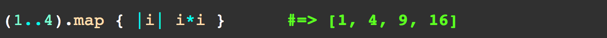
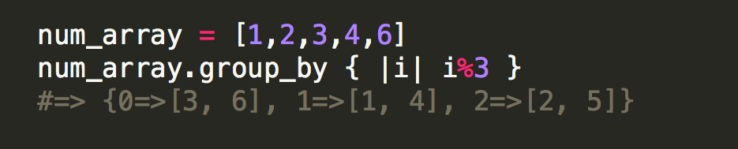
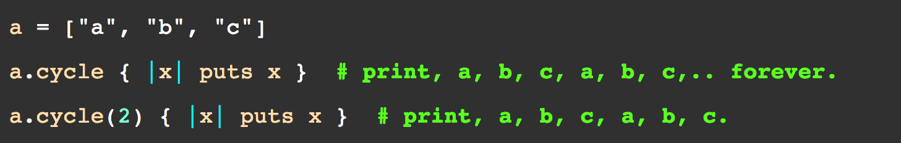

Tech Blog
June, 2014
This blog will attempt to explain three very useful enumerables that are often used in Ruby.
But first, What is an Enumerable?
A "enumerable" is Ruby's way of saying that we can get elements out of a collection, one at a time. (aka- an "external iterator" or what I like to call the 'Looper') A "enumrator", then, is the tool we use to get elemen out of a collection, one at a time.
Referenced from: rubymonk.com
What it does: "The Enumerator#map method returns a new array with the results of running the block once for every element in the Enumerator". If no block is given, an enumerator is returned instead.
Example: Let's say you have an array of numbers that you would like to iterate over and have it return a collection of results after running the code. You can apply a map method and it would return such a collection.
What it does:"The Enumarator#group_by method is a pretty cool method once you understand what it does. What the group_by method does is groups the collection by result of the block. It returns a hash where the keys are the evaluated result from the block and the values are arrays of elements in the collection that correspond to the key." (Lost yet? Yeah, I was too. Hopefully the challenge below will help.)
Example: Okay, let's say you have an array of numbers called num_array. Now let's say we have a block of code that we want to run and our answers are in the num_array. So what we really want is a way to 'group' the elements in the array 'by' the associated key of that answer. In the example below.
i % 3
0 % 3 = both 3 and 6 (from the array) fulfills this answer
1 % 3 = both 1 and 4 (from the array) fulfills this answer
2 % 3 = both 2 and 5 (from the array) fulfills this answer
So what group_by does is group the values by association of the key in the hash.
What it does: It runs the block of code for each element repeatedly n times (or 'cycles'). It can also run forever if nil is not specified or isn't given. If a non-positive number is given or the collection is empty, it does nothing. If no block is given, an enumerator is returned instead.
Example:
All Enumerable method explainations were referenced from: Ruby-docs
Hope this helped!